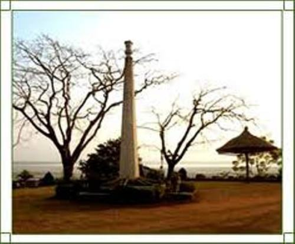

ASSAM

Assam , is a northeastern state of India. Its capital is Dispur, located within the municipal area
of Guwahati city. Located south of the eastern Himalayas, Assam comprises the Brahmaputra and
the Barak river valleys along with the Karbi Anglong and the North Cachar Hills with an area of
30,285 square miles (78,438 km²). Assam is surrounded by six of the other Seven Sister States:
Arunachal Pradesh, Nagaland, Manipur, Mizoram, Tripura and Meghalaya. Geographically Assam
and these states are connected to the rest of India via a narrow strip of land in West Bengal called
the Siliguri Corridor or "Chicken's Neck".
Assam shares international borders with Bhutan and Bangladesh; and cultures, peoples and climate
with South-East Asia – important elements in India’s Look East policy. Assam became a part of the
British India after the British occupied the region following the First Anglo-Burmese War of 1824–1826.
Assam is rich in culture, ethnic groups, languages/dialacts spoken and literature.
It is known for Assam tea, large and old petroleum resources (the first oil reserves of India were
discovered in Assam in the late 19th century), Assam silk and for its rich biodiversity. Assam has
successfully conserved the one-horned Indian rhinoceros from near extinction, along with the tiger
and numerous species of birds, and it provides one of the last wild habitats for the Asian elephant.
It is becoming an increasingly popular destination for wildlife tourism, and Kaziranga and Manas
are both World Heritage Sites. Assam was also known for its Sal tree forests and forest products,
much depleted now. A land of high rainfall, Assam is endowed with lush greenery and the mighty
river Brahmaputra, whose tributaries and oxbow lakes provide the region with a unique hydro-
geomorphic and aesthetic environment.